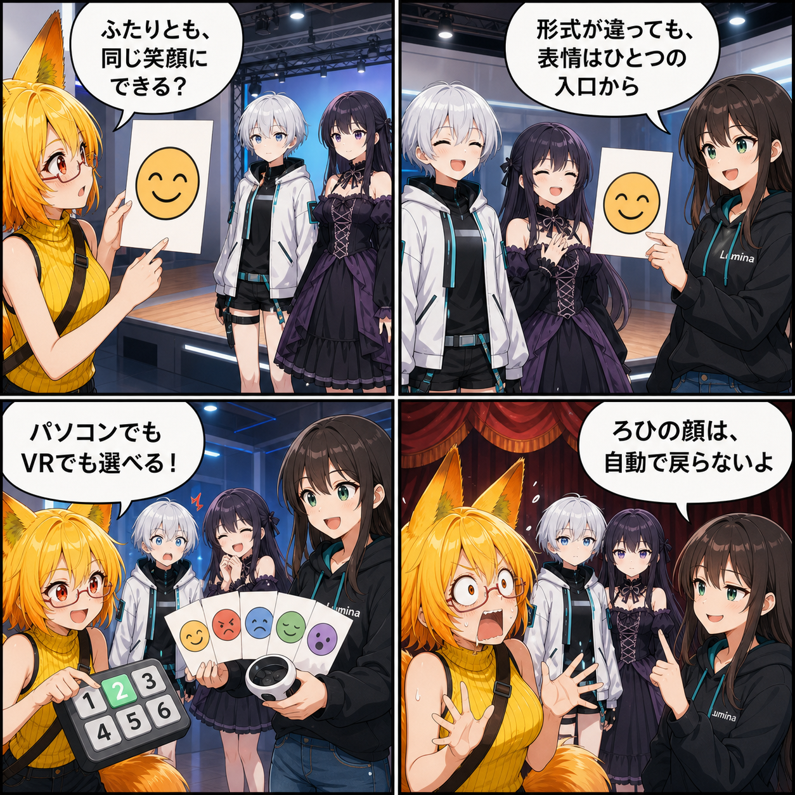

どのアバターでも、同じ笑顔へ。VRM/VABの表情切替をそろえた日
デスクトップでもVRでも、VRMとVABの違いを意識せずにアバターの表情を選べる共通コントローラーを実装しました。
main ブランチでは集計期間内に8件のコミットがありました。終了時点のHEADは bc6b42e（ビルド互換性とAI配布ランタイムを修正）、期間全体では93ファイル、6,656行追加、4,787行削除です。現在のViewer作業ツリーには3パスの未コミット変更がありますが、実装日を確定できないため本日の実績には含めていません。集計期間は 2026-09-02 03:00:00 JST から 2026-09-03 02:59:59 JST までです。
形式ごとに分かれていた表情を、ひとつの入口へ
VRMは BlendShapeClip、VABは独自のExpression定義を使うため、表情の列挙や適用経路は形式ごとに異なります。今回追加した AvatarExpressionController はその違いを吸収し、Neutral、Happy、Angry、Sad、Relaxed、Surprisedと利用者向けカスタム表情を共通の選択肢として公開します。
口パク、視線、自動まばたき用の表情は手動選択肢から除外します。ウィンク系を手動で選んだ間は自動まばたきを抑え、表情同士が競合しないようにしました。
デスクトップでもVRでも選べる
デスクトップのアバター操作中は、画面下の1行HUDに現在の表情と数字キー1〜6のショートカットを表示します。VRでは既存の表情画面から同じ共通コントローラーを利用し、手動表情を選んだ間はコントローラーのジェスチャー表情と競合しません。必要ならジェスチャー制御へ戻せます。
終わったら、元の顔へ
アバター操作を始める際にBlendShapeの状態を記録し、終了時には開始前の値へ復元します。試した表情が次の操作へ残り続けないため、気軽に切り替えて確認できます。
技術的なポイント
- VRMとVABの表情を
AvatarExpressionOptionへ共通化 - 標準表情と利用者向けカスタム表情だけを手動メニューへ列挙
- 口パク、視線、自動まばたき用の項目を除外
- デスクトップは数字キー1〜6、VRは表情画面から適用
- 手動表情、ジェスチャー表情、自動まばたきの競合を制御
- 操作終了時に開始前のBlendShape状態を復元
ほかにも進んだこと
- Skybox画像を縦横比から自動判定して読み込む経路を追加
- VAS再生をフレーム基準へそろえ、シークと終了判定を安定化
- エフェクト描画と天候反映の不具合を修正
- VRの直掴み入力を整理し、両手で一貫した操作へ統一
- ビルド互換パッチとAI配布ランタイムの組み込みを改善
4コマの裏話
二種類のアバターへ同じ「表情リモコン」が通じる様子を舞台稽古として描きました。最後は終演と同時にアバターだけ元の顔へ戻り、顔芸を続けていたろひが取り残されます。
まとめ
形式ごとの違いを共通コントローラーへ閉じ込めたことで、VRMでもVABでも、デスクトップでもVRでも、同じ考え方で表情を選べるようになりました。自動表情との競合を避け、終了時には元へ戻るところまで含めた表情切替です。
本日のひとこと： 戻るのはアバターの顔だけでした。